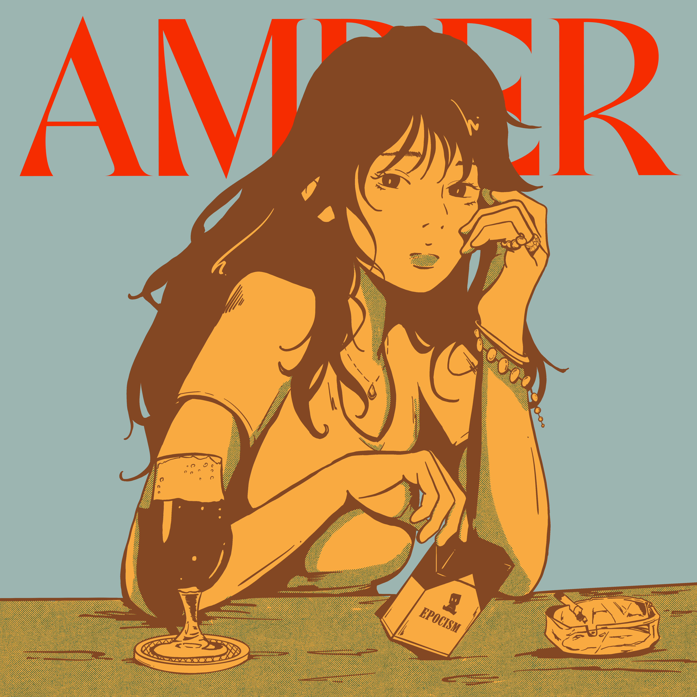
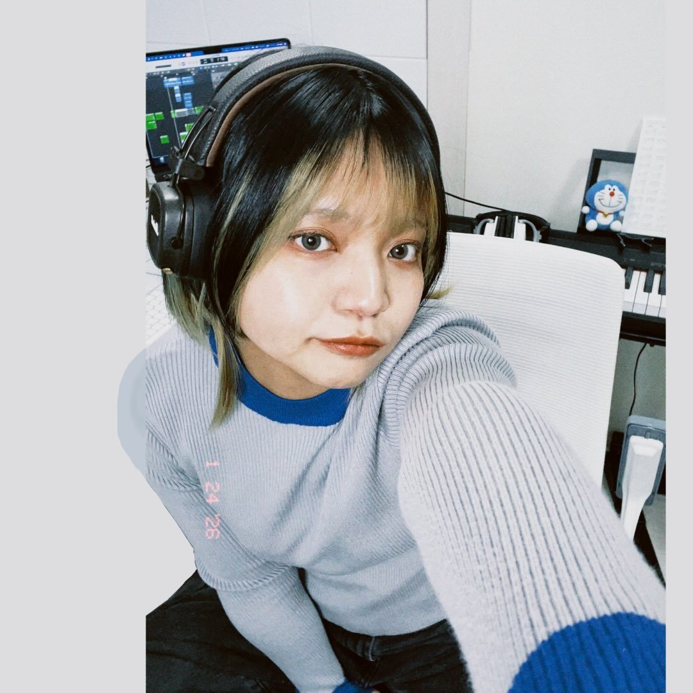

琥珀のように輝く女性と共に。

平日の夜、ふらっと立ち寄ったバーのカウンター。
グラスの向こう側で、静かに揺れていた 琥珀色の光。
さも当たり前のように座っている女性に、
釘付けになってしまった。

— singer songwriter夜に似合う、やわらかくて芯のある歌声。 誰かの記憶の片隅にそっと置いていくような、 物語のある楽曲を紡ぐシンガーソングライター。
正直、販売までたどり着けるなんて思ってなかった。 ふと湧いた「こんなのあったら楽しいかも」から、気づけばここまで来てました。
自分の描いたたった1枚のイラストを、じっくり眺めて、音に変えてくれる人が、 なんと5名も。それだけで、わたしにとっては奇跡みたいな話。
Epochstory といえば、ちょっとエモくて、チルで、女性のイラスト。 その代名詞といえば、"バーで見つけた美人さん"。 このイラストに合わせた曲が完成するなんて、感謝でしかない！
手にとってくれるあなたへ。
この1枚と、1曲で夜を楽しんでもらえると嬉しいです。